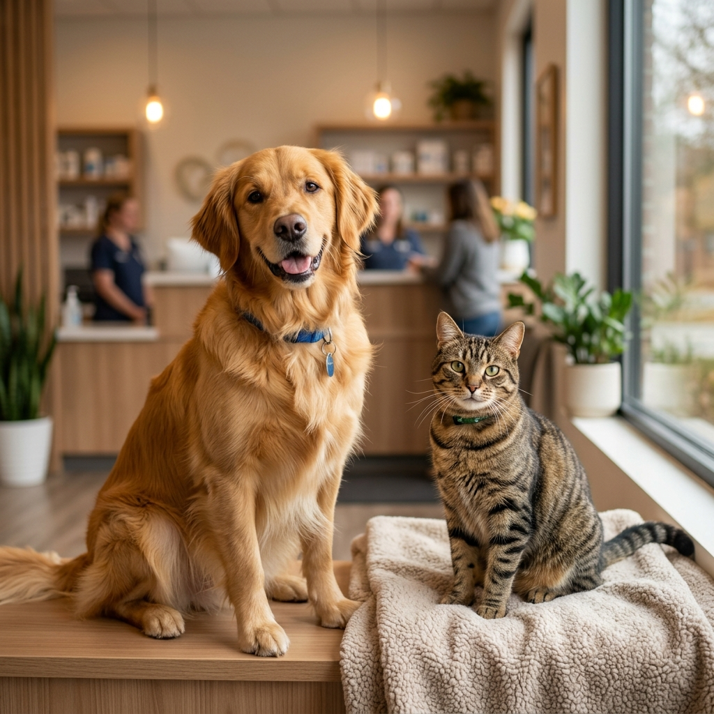

Equipamentos de Ponta
Tecnologia médica de última geração, incluindo ecografia, radiologia digital e laboratório próprio para resultados imediatos.

Medicina veterinária de alto padrão com tecnologia de ponta,
equipa especializada e um atendimento verdadeiramente humano.
Comprometidos com os mais altos padrões de medicina veterinária, garantindo
o melhor cuidado para o seu companheiro.
Tecnologia médica de última geração, incluindo ecografia, radiologia digital e laboratório próprio para resultados imediatos.
Médicos veterinários certificados, com especialidades em cirurgia, dermatologia, cardiologia e medicina interna.
Análises clínicas, radiografias, ecografias e electrocardiogramas realizados na própria clínica, com resultados em horas.
Tratamos cada animal como único. O nosso ambiente é calmo, acolhedor e projetado para minimizar o stress dos seus pets.
A nossa equipa de urgências está disponível 24 horas por dia, 7 dias por semana, para quando o seu animal mais precisar.
Acreditados pela Ordem dos Médicos Veterinários e parceiros das principais seguradoras de saúde animal em Portugal.
Uma gama completa de cuidados veterinários sob o mesmo tecto.
Consultas de medicina geral e preventiva, check-ups completos e acompanhamento contínuo da saúde do seu animal.
Medicina GeralBloco operatório moderno e equipado para cirurgias de tecidos moles, ortopédicas e esterilizações, com anestesia monitorizada.
EspecialidadePlano vacinal personalizado para cães, gatos e animais exóticos, com cartão de saúde digital e lembretes automáticos.
PrevençãoLimpeza dentária ultrassónica, extracções e tratamentos periodontais para garantir uma saúde oral perfeita ao seu pet.
Saúde OralRadiologia digital, ecografia abdominal e cardíaca, com relatórios detalhados emitidos pelos nossos especialistas em imagiologia.
DiagnósticoUnidade de internamento supervisionada 24h, com monitorização contínua dos parâmetros vitais e visitas dos donos.
Cuidados IntensivosNa VitaPet, acreditamos que os animais de companhia são membros de pleno direito da família. É por isso que oferecemos um nível de cuidado que vai muito além do tratamento médico — criamos uma relação de confiança, empatia e excelência com cada dono e o seu animal.
Fundada em 2012, a nossa clínica nasceu da paixão de um grupo de veterinários que acreditava que era possível unir a melhor tecnologia médica com um atendimento genuinamente humano. Hoje, com mais de 4.800 pacientes tratados, continuamos a guiar-nos pelos mesmos princípios que nos fundaram.
Histórias reais de donos que confiam a saúde dos seus pets à VitaPet.
"A VitaPet salvou a vida do meu Buddy. A equipa foi incrivelmente dedicada durante toda a cirurgia e o pós-operatório. Nunca me senti tão bem informada e apoiada. Recomendo a toda a gente!"
"A minha Mia tem problemas cardíacos e precisa de monitorização constante. A Dr.ª Sofia tem sido extraordinária — explica tudo com paciência, é carinhosa com a Mia e está sempre disponível para as minhas dúvidas."
"Trouxe o meu Simba de urgência a uma da manhã e fui atendido de imediato. A clínica estava impecável, a equipa foi profissional e tranquilizadora. É de longe a melhor clínica veterinária de Lisboa."
Certificações & Parceiros
As respostas às questões mais comuns dos nossos clientes.
Em caso de emergência, ligue imediatamente para a nossa linha de urgências: +351 210 000 000, disponível 24 horas por dia. A nossa equipa irá orientá-lo sobre os primeiros cuidados e preparar a recepção do seu animal. Não tente administrar medicação humana ao seu pet — isso pode ser perigoso. Mantenha o animal calmo, num espaço seguro e quente, e desloque-se à clínica o mais rapidamente possível.
O plano vacinal depende da idade, estilo de vida e historial de saúde do animal. Para cães, as vacinas essenciais incluem: Esgana, Parvovirose, Hepatite, Leptospirose e Raiva (obrigatória por lei). Para gatos: Panleucopénia, Rinotraqueíte, Calicivírus e Leucemia Felina. As vacinas de reforço são geralmente anuais, mas algumas têm periodicidade trianual. Consulte-nos para criar o plano ideal para o seu animal.
A esterilização é geralmente recomendada a partir dos 6 meses de idade em gatos e entre os 6 e os 12 meses em cães, dependendo da raça e tamanho. Este procedimento traz inúmeros benefícios para a saúde, incluindo a prevenção de cancros hormonais e comportamentos indesejados. Marque uma consulta de avaliação para determinar o momento ideal para o seu animal específico.
Sim! A VitaPet é parceira das principais seguradoras de saúde animal em Portugal, incluindo Fidelidade Pet, Mapet Seguros e Ageas Animal. Processamos o reembolso diretamente com a seguradora na maioria dos casos, simplificando o processo para si. Contacte-nos para confirmar a sua cobertura antes da consulta.
Pode agendar a sua consulta de várias formas: através do formulário nesta página, por telefone em +351 210 000 000, por e-mail em marcacoes@vitapet.pt, ou presencialmente na clínica. Para consultas de urgência, ligue sempre diretamente — garantimos atendimento imediato 24 horas. Responderemos à sua marcação em menos de 2 horas nos dias úteis.
Sim! Contamos com um veterinário especializado em medicina de animais exóticos, incluindo coelhos, porquinhos-da-índia, chinchilas, aves de estimação e répteis. Estes animais têm particularidades médicas muito específicas, pelo que é fundamental um especialista. Marque consulta com antecedência para garantir disponibilidade do nosso especialista.
A saúde do seu animal não pode esperar. Contacte-nos agora e a nossa equipa tratará de tudo.
Entraremos em contacto em breve para confirmar a sua marcação. Obrigado por escolher a VitaPet!